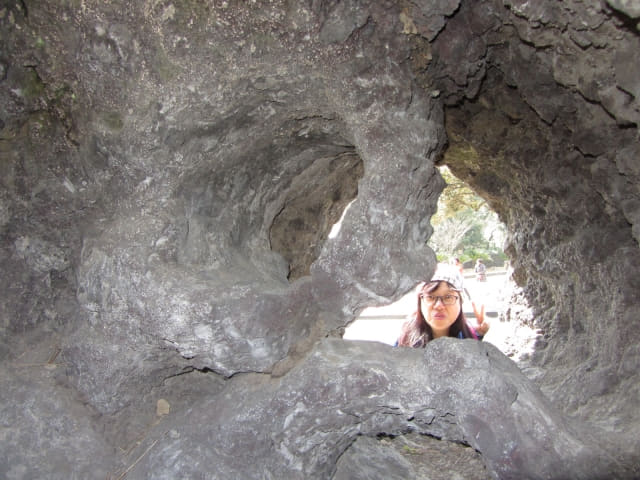

在濟州島建立由來的神話傳說遺跡三姓穴門外隨便看看後, 繼續步行往下一個目的地 – 新山公園 (신산공원) 。新山公園就在三姓穴隔鄰, 步行數十步, 走過三姓橋(삼성교) 便抵達入口。
1988年首爾舉辦奧運會, 新山公園是為了紀念聖火傳經濟州島時所設立的公園, 現在是濟州市民平日休憩的地方, 公園內種植了很多櫻樹, 是濟州島三大賞櫻地點之一。
新山公園入口處有一個高高的紅色雕像, 看清楚, 原來是石頭爺爺的造型!
新山公園入口前是一個很大的廣場及停車場。
新山公園雖然說是濟州市民平日休憩的地方, 但是需要入場費的, 每位是1,100韓元。
站在大門口探頭探頭向內看看, 櫻樹仍然是光禿禿的。看見這樣, 當然不購票進內啦! 在新山公園外面逛逛算了!
新山公園火山熔岩球展示區
新山公園門前的廣場擺放了奇形怪狀的火山熔岩球, 十分得意的。
當火山爆發後, 高粘性的熔岩慢慢地流淌, 在表面層接觸空氣的首先堅硬起來, 但熔岩內部仍然繼續流動, 結果部份熔岩中間形成一個洞穴, 部份將熔岩撕破, 形成奇形怪狀的火山熔岩球。


白馬高地英雄康承宇少尉像
新山公園旁豎立了白馬高地英雄康承宇少尉像。
白馬高地戰役是韓戰中一次激烈的高地爭奪戰, 中國人民志願軍於1952年10月6日凌晨開始進攻由韓國第9師防守的白馬山, 歷時十天, 雙方軍隊傷亡慘重, 而康承宇少尉也在此役中殉命。中國人民志願軍最後最後被迫撤出, 韓國第9師也因此贏得了「白馬師」的稱號。
遊覽完新山公園, 時間已經差不多下午一時半, 是時候吃午餐了。
新山公園對面的「일도국수」食堂午餐
看見馬路對面有一間餐館, 店舖名稱是「일도국수」, 便馬上走去看看, 從裝修和桌子的擺設, 一看就知道是一間大眾化的食堂啦。這些食堂一般的價錢比較便宜, 當然毫不考慮便進內。

我們每人都叫了一客牛雜湯飯, 每客是6,000韓元。

配菜是最傳統的胡蘿蔔泡菜、大白菜泡菜和青辣椒。
用料十足的牛雜湯飯, 味道很好, 十分滿足。